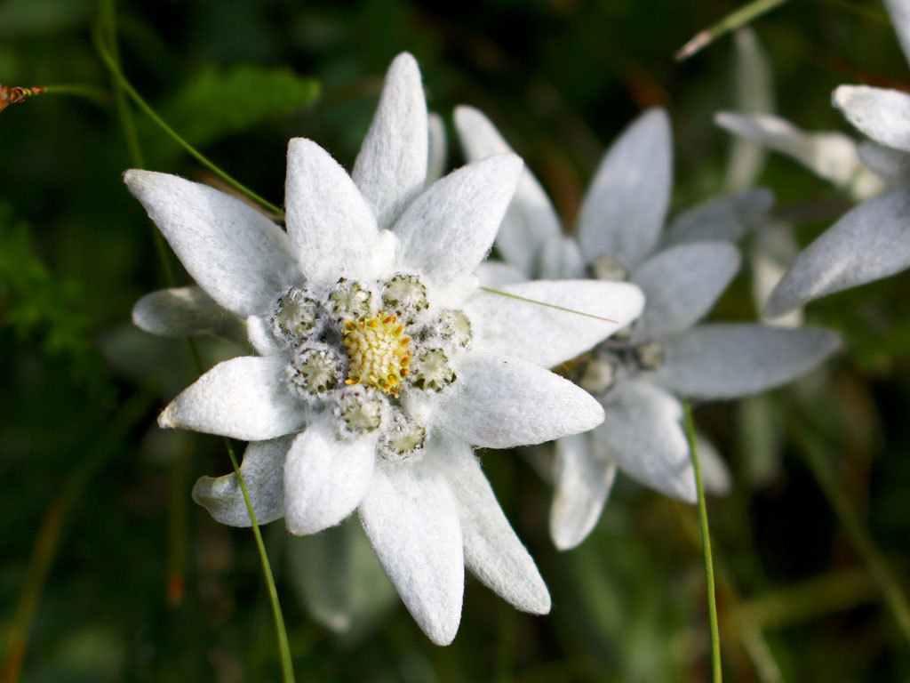
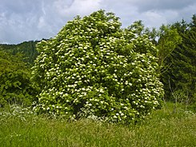
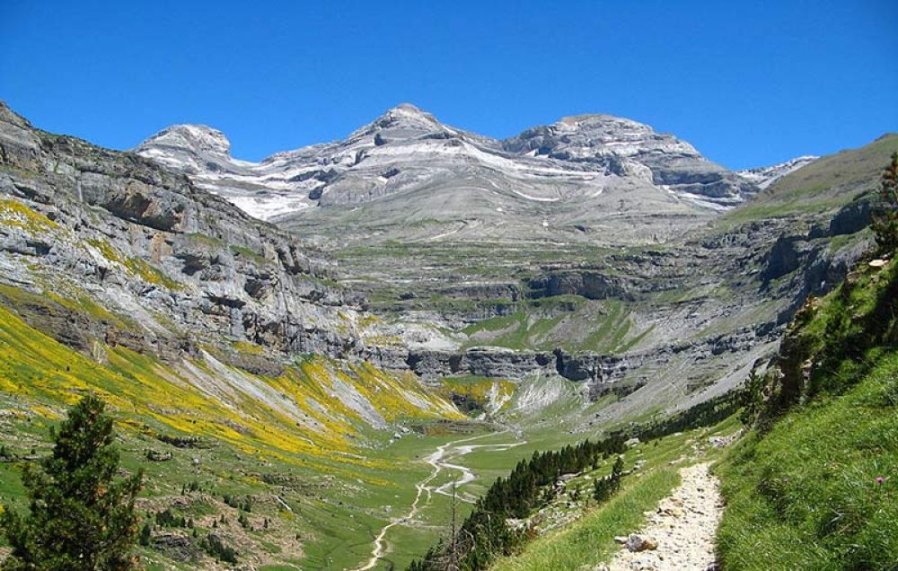
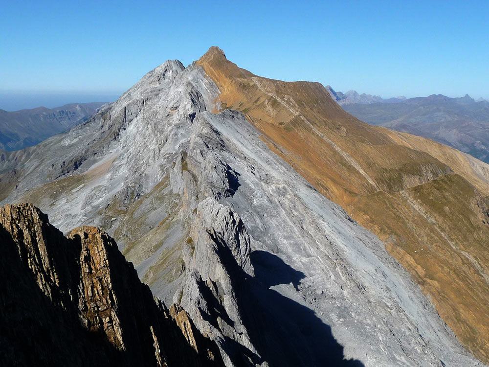

Ruticas y Trepadas
Para degastar la planta del pie
Colección de rutas senderistas para la familia, las amigas y en solitario
- Senderos en los Valles Occidentales
- Senderos en la Jacetania
- Rutas y ascensiones por el Alto Gállego
¡Al medio y adentro! 
Donde llenar la panza y el zurrón
Aprovechando la publicación del libro "Gastrorrutas por los Pirineos" de Eduardo Viñuales, repaso los sitios donde me gusta ir a disfrutar de los manjares de la tierra.
- El Merendero de Garcés - San Vicente de Labuerda
- El Balcón del Pirineo - Buesa
- La Borda del Bearnés - Canfranc-Estación
Cuaderno de Campo
...fotografía de puño y letra
| Categoría | Recursos | Foto |
|---|---|---|
| Flora | Edelweiss |  |
| Saúco |  | |
| Rocas y Montañas | Monte Perdido |  |
| Tendeñera |  |
Un pequeño regalito visual